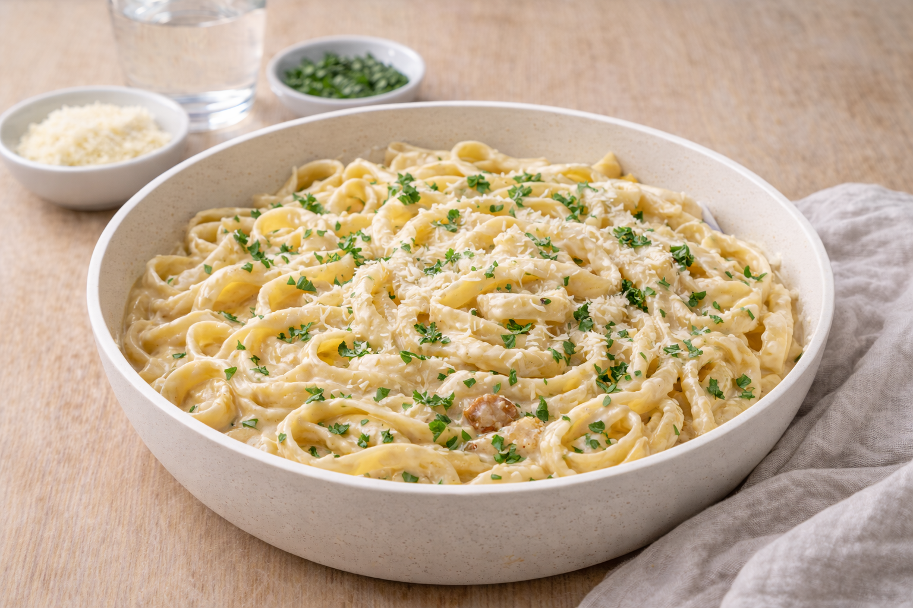

Pasta Alfredo
Krämig pasta alfredo med parmesan. Snabb middag som känns lyxig men är enkel att laga.

Ingredienser
- 400 g fettuccine (eller spaghetti)
- 2 dl grädde
- 50 g smör
- 1.5 dl riven parmesan
- 1 vitlöksklyfta (valfritt)
- Salt och svartpeppar
- Lite pastavatten
Så lagar du
- Koka pastan i saltat vatten. Spara 1 dl pastavatten.
- Smält smör i en kastrull. Tillsätt grädde (och ev. vitlök).
- Rör i parmesan och låt smälta till en krämig sås.
- Vänd ner pastan. Späd med lite pastavatten till rätt konsistens.
- Smaka av med peppar och servera direkt.
Tips & variationer
- Toppa med persilja eller extra parmesan.
- Lägg till kyckling eller broccoli om du vill göra den matigare.